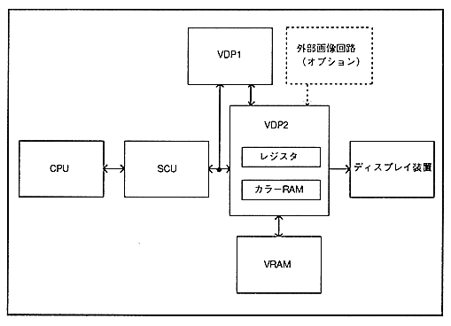

VDP2 is connected to 4M or 8Mbit VRAM and has 32Kbit color RAM. Image data is defined in the VRAM and color RAM from the CPU via the SCU. Similarly, information that controls image display is set in each register.
The data defined in VRAM is read according to the register settings and becomes the image data of each scroll screen. The image data of each scroll screen, sprite image data sent from VDP1, and external image data sent from the outside are given display priority according to the register settings and become display image data. When the display image data is in pallet format, the color data defined in the color RAM is read according to the value and converted to display color data. When the display image data is in RGB format, the display image data is used as display color data. The display color data obtained in this way is output to the display device.
The system configuration of VDP2 is shown in Figure 1.1.
Figure 1.1 System configuration
